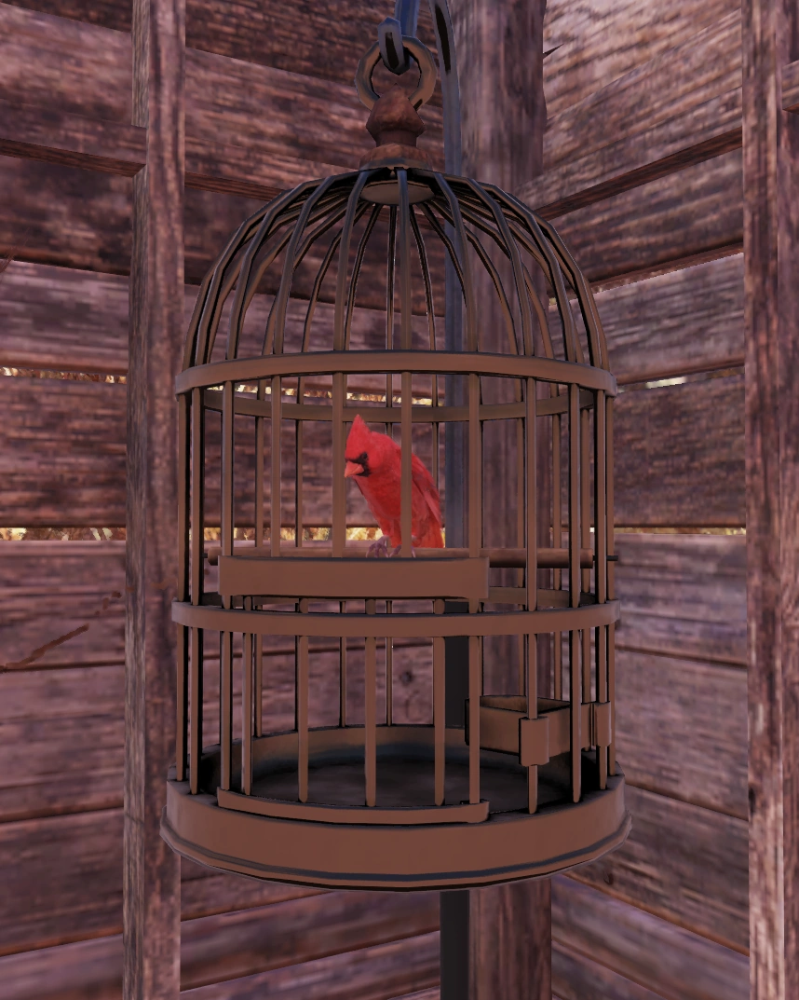
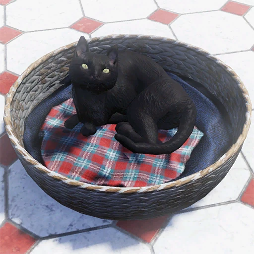
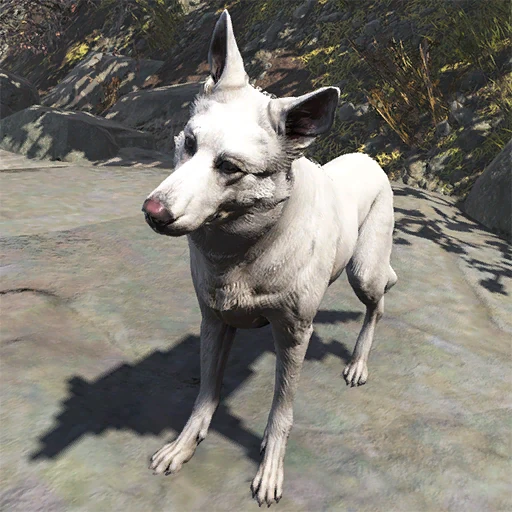
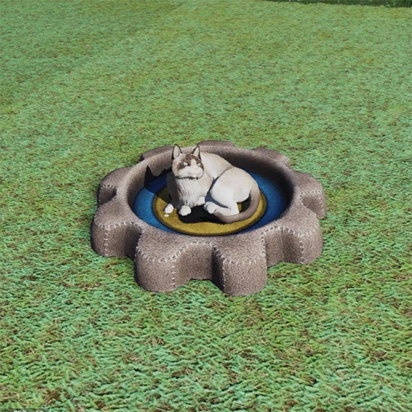
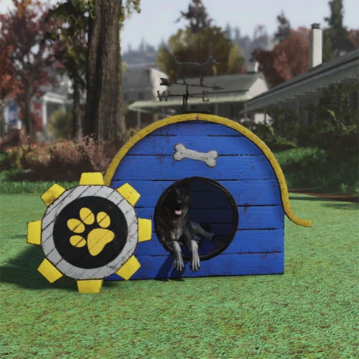
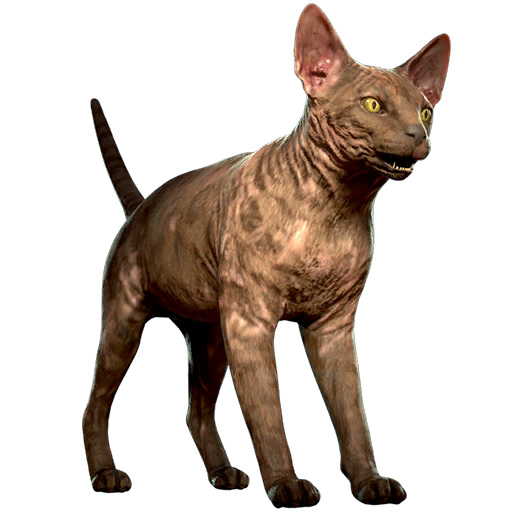
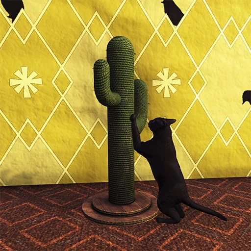
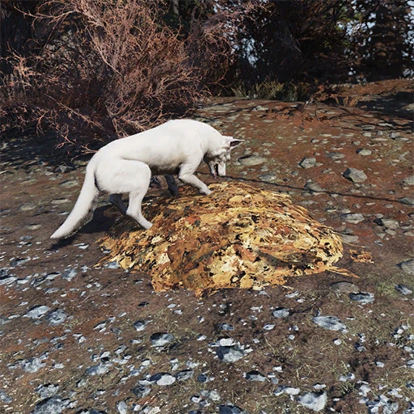
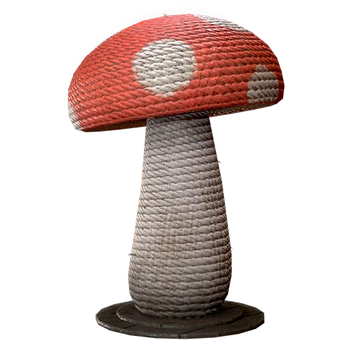

Fallout 76 pets
ペット
概要
ペット、別名C.A.M.P.ペットは、『Gleaming
Depths』アップデートで導入された、犬や猫をC.A.M.P.で飼うことができる『Fallout
76』の機能です。
ペットは仲間機能と同様にプレイヤーのC.A.M.P.に住み着き、それぞれのC.A.M.P.オブジェクトは「居住者」（以前の「仲間」）セクションで作成できます。
ペットには自由に名前を付けたり、服を着せたりと、様々な形でのカスタマイズやインタラクションが可能です。
インタラクション
ペットとのインタラクションには3つのオプションがあります。
- インタラクト：なでる、話す、座るの3つのオプションがあるホイールメニューを開きます。
- カスタマイズ：特定のアパレルアイテム（アーマー作業台で作成可能）をペットに装備させることができます。
効果は見た目のみです。
- 名前を変更：プレイヤーが好きな名前をペットに付けることができます。
他のプレイヤーがC.A.M.P.を訪れた際、ペットの名前は表示されません。
利用可能なペットの一覧

ほとんどのペットは単体で800アトム、またはバンドルの一部として1200アトムで販売されています。
黒いボンベイキャットとホワイト・ジャーマンシェパードは、シーズン19「Gleaming
Depths: The Scientific Forge」でロック解除可能でした。
アトミックショップ
- グレー・トラ猫（オブジェクト：グレー・トラ猫のベッド）
- ジャーマンシェパード（オブジェクト：ジャーマンシェパードの家）
- スフィンクスキャット（オブジェクト：スフィンクスキャットのベッド）
- ロットワイラー（オブジェクト：不明）
- ワイルドキャット（オブジェクト：ワイルドキャットのベッド）
- ファームキャット（オブジェクト：ファームキャットのベッド）
- ロボポウ・スチールキャット（オブジェクト：不明）
- ロボポウ・スチールドッグ（オブジェクト：不明）
- ラッドホッグ（オブジェクト：不明）
シーズン報酬
- ボンベイキャット（オブジェクト：ボンベイキャットのベッド）
- ホワイト・シェパード（オブジェクト：ホワイト・ジャーマンシェパードの家）
- ラグドールキャット（オブジェクト：ラグドールキャットのベッド）
- セーブル・シェパードドッグ（オブジェクト：セーブル・シェパードのベッド）
- リコイキャット（オブジェクト：???）
装備可能なアイテム
- 猫の赤い蝶ネクタイの首輪 (250アトム)
- 犬の赤い蝶ネクタイの首輪 (250アトム)
- 猫の革の首輪 (250アトム)
ペットの宝物
ペットは時々、プレイヤーにアイテムを持ってきてくれます。
これは「ペットの宝物」という機能として知られています。
これらのアイテムの完全なリストはまだ正式に確認されていません。
ペット用家具
ペットに付属する構築可能なC.A.M.P.オブジェクトの他に、「その他の建造物」タブで見つけることができる、ペットがインタラクトできる関連家具アイテムもあります。
- 猫の爪とぎタワー (500アトム)
- 犬用の土の山 (500アトム)
- サボテンの爪とぎ（シーズン報酬）
- 犬用の落ち葉の山（シーズン報酬）
- キノコの爪とぎ（シーズン報酬）
メモ

- プレイヤーはC.A.M.P.にペットと仲間の両方を同時に配置できますが、それぞれ1種類（1人/1匹）しか配置できません。
- C.A.M.P.ペットはワールド内でプレイヤーに付いてくることはありませんが、C.A.M.P.周辺ではプレイヤーに付いて回ります。
- 仲間と同様に、C.A.M.P.ペットはシェルターには配置できません。
- 全くインタラクトできないものの、C.A.M.P.に配置できる動物は他にも多数存在します。
これには、鳥類（檻に入れられたカーディナルやフクロウを含む）、カラスの止まり木、ヒメコンドル、魚（アトランティック・シティのアクアリウム、変異した金魚、TVアクアリウムなど）、ペットのトカゲ、蝶、ウサギ小屋、巨大アリのアリの巣などがあります。
モールラットジェネレーターも存在します。
また、シーズン報酬として登場した、瓶詰めの「ブリンキー」という奇妙なクリーチャーもいます。
開発
「クリーチャートーミング（テイム機能）」は『Fallout
76』のリリース当初からゲームプレイの仕組みとして存在していましたが、C.A.M.P.ペットのための独立したシステムには長い開発の歴史があります。
2020年4月、『Wastelanders』アップデートのリリース直後、当時のプロジェクトリーダーであるジェフ・ガーディナーはRedditのAMA（質疑応答）で、チームが仲間システムに続くものとしてC.A.M.P.ペットに取り組んでいると述べました。
2021年3月には2021年の年間ロードマップが公開され、2021年冬のアップデート（当時は『Tales from the Stars』と呼ばれ、後に『Night of the
Moth』に変更）でC.A.M.P.ペットが実装されると予告されました。
その数日後、当時のデザインディレクターであるマーク・タッカーも別のReddit
AMAで、チームが依然としてC.A.M.P.ペットのメカニクスに取り組んでおり、様々な種類の犬から始め、猫へと拡大し、そこから「展開していく」つもりであると確認しました。
この時期に、ペット用と思われるいくつかの消費アイテム（エディターIDプレフィックスが「PETS_」のもの、バーガービッツ、フォレッジポリッジ、ミートトリーツ、シードフィード、ステークスティックス、ベジヴィトルズなど）がデータマイニングで発見されました。
しかし、2021年9月、C.A.M.P.ペットはロードマップから削除されました。
BethesdaコミュニティマネージャーからのRedditのコメントにより、C.A.M.P.ペットが2022年に延期されたことが発表されました。
しかし、2022年のロードマップにもC.A.M.P.ペットは含まれておらず、その後、状況についてのニュースは一切ありませんでした。
2024年7月、パブリックテストサーバーのデータマイニングにより、ペットメカニクスのチュートリアルメニューがゲームファイルに追加されていることが判明しました。
2024年9月、Xbox Tokyo Game Showでのビデオセグメントにて、ディレクターのジョナサン・ラッシュが、2024年末に『Fallout
76』へペットが実装されることを公式に確認しました。
この機能は2024年9月30日にPTSに追加されました。
2024年10月のFallout Day Broadcastにて、C.A.M.P.ペット機能のプレビューがさらに公開されました。
そこで、トラ猫とジャーマンシェパードが最初にリリースされる2匹のペットであることが確認され、今後さらに増えること、そして毛のある生物と毛のない生物の存在が示唆されました。
C.A.M.P.ペットは最終的に、2024年12月の『Gleaming Depths』アップデートの一環として導入されました。
舞台裏
- ジョナサン・ラッシュによれば、システムおよびマネタイズデザイナーのマシュー・ドンデリンガーが、C.A.M.P.ペット機能の主任デザイナーでした。
- 初期バージョンのパブリックテストサーバーでは、「なでる」アクションは一人称視点でのみ機能していました。
三人称視点でのアニメーションは、2024年11月1日にPTSへアップデートされました。
ギャラリー








ずっと前のWastelanders直後から「ペット来る！」ってロードマップにも載ってたのにいつの間にか消えてて、半ばもう諦めかけていたレジデントも多いんじゃないでしょうか。
それがこうして立派な形でアパラチアに来てくれたのは感無量です〜。
ちゃんと名前も付けられるし撫でることもできるのが神アプデすぎます！！ただC.A.M.P.に置くだけの置物じゃなくて、家具にもインタラクトしてくれたりとか「そこに確実に住んでる」って感じがして最高ですね！今までもテリトリーにいるデスクロー先生を必死にテイムしてC.A.M.P.に連れ帰ったりしてましたけど、やっぱりこういう身近なワンちゃんやネコちゃんがシェルターじゃなくて外の日差しの中でくつろいでる姿を見れるのは、殺伐とした荒野の生活において心休まる一瞬ですよね。
しかも後から「毛のない生物」とかのバリエーションも来そうってことで、個人的には早くアトムショップで変なクリーチャーやもっと可愛い動物たちが山ほど並ぶのを見たいなー！ってワクワクしてます！仲間と一緒にペットがいるC.A.M.P.はもう立派な「家」ですねー。
これからもずっと愛でていこうと思います！豚..?知らない子ですね...。
This article was created by translating and editing Fallout 76 pets from Nukapedia: The Fallout Wiki.
Licensed under the Creative Commons Attribution-Share Alike License (CC BY-SA 3.0).
コミュニティ維持のため、寄付を受け付けております。
> COMMENTS